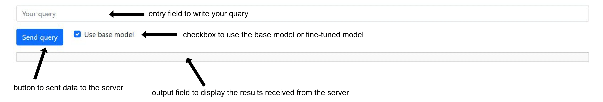

Laboratory work №8. Supervised Fine-Tuning (SFT) Large Language Models
Implementation tactics
Stage 0. Start working with laboratory work
Start your implementation by selecting a new combination of model and dataset you are going to use for fine-tuning. You can find all available combinations in the table.
Important
For laboratory work №8, you need to select another task, namely, if there was a generation (Generation, Summarization, NMT) task, then you need to select classification (Detection, NLI) and vice versa.
Important
You have to open new Pull Request to implement Laboratory Work №8.
Note
All logic for instantiating and using needed abstractions
should be implemented in a main() function of a start.py module.
To do this, implement the functions in the main.py module in lab_8_sft folder
and import them into start.py module in lab_8_sft folder.
if __name__ == '__main__':
main()
Note
You need to set the desired mark: 4, 6, 8 or 10 in the target_score field
in the settings.json file. The higher the desired mark, the more
number of tests run when checking your Pull Request.
- Python competencies required to complete this tutorial:
working with Transformers models;
working with HuggingFace datasets;
working with LoRA PEFT method;
estimating result using metric;
making server for the chosen task using FastAPI.
Motivation and purpose
In this laboratory work, we will explore both inference and fine-tuning of Large Language Models (LLMs), with a particular focus on Supervised Fine-Tuning (SFT) using Parameter-Efficient Fine-Tuning (PEFT) techniques, specifically LoRA (Low-Rank Adaptation).
As previously discussed, the lifecycle of LLMs consists of several phases, with two key stages being:
Training - the phase in which the model learns from a large labeled dataset, adjusting its internal parameters (weights and biases) to recognize patterns and relationships in the data. Training requires extensive computational resources and vast amounts of data.
Inference - the phase in which the pre-trained model is used to generate predictions on new, unseen data without further modifications to its internal parameters. Inference is computationally less expensive and focuses on efficient, real-time responses.
However, in many real-world applications, pre-trained models do not always generalize well to specific domains or tasks. To bridge this gap, fine-tuning is employed. Fine-tuning allows us to adapt a general LLM to a specialized task by continuing its training on a smaller, task-specific dataset.
Full fine-tuning of LLMs is computationally expensive, requiring access to large-scale hardware resources. Parameter-Efficient Fine-Tuning (PEFT) methods, such as LoRA (Low-Rank Adaptation), provide an alternative approach by modifying only a small subset of the model’s parameters, making the process more memory- and compute-efficient. LoRA achieves this by introducing low-rank adaptation matrices to the model’s pre-trained layers, significantly reducing the number of trainable parameters while still maintaining high performance.
The primary purpose of this laboratory work is to:
Understand the difference between inference and fine-tuning in LLMs.
Learn how to fine-tune LLMs efficiently using LoRA within the PEFT framework.
Apply fine-tuned models to various NLP tasks such as Generation, Summarization, Classification, and Machine Translation.
Compare the performance of a pre-trained model versus a fine-tuned model on specific tasks.
By the end of this laboratory work, you will gain practical experience in applying LoRA-based fine-tuning to adapt LLMs for specific tasks while optimizing for efficiency.
Stage 1. Infer one sample from dataset and demonstrate the result
Important
Stages 1 - 4.3 from Laboratory work №7. Large Language Models no. 1 are required to get the mark 4.
Stage 2. Inference of model and demonstrate the result
Important
Stages 4.4 - 5.2 from Laboratory work №7. Large Language Models no. 1 are required to get the mark 6.
Stage 3. Tokenize one sample from dataset
Before fine-tuning a model, it is important to properly prepare the data. Since the data is presented as text, it must be tokenized (i.e. converted into a numeric representation) to prepare it for transfer to the model for fine-tuning.
Implement lab_8_sft.main.tokenize_sample() function, which tokenizes the
sample and truncates it to its maximum length.
Set the following parameters for tokenizer:
padding="max_length";
truncation=True;
max_length=120.
Method should return a dictionary with the input_ids, attention_mask and
labels for current sample as keys. Such return values provide the necessary
information to feed into the model, ensuring the correct fine-tuning process.
Important
It is necessary to have such keys (input_ids,
attention_mask and labels) of the returned dictionary, since
the transformers library has built-in data processing mechanisms
that expect exactly these names.
Important
For Seq2Seq models, it is necessary to tokenize not only sample from the source column, but also from the target column.
Stage 4. Introduce dataset abstraction: TokenizedTaskDataset
As in the previous laboratory work to interact with the model we will use PyTorch
Dataset abstraction.
We convert pd.DataFrame to Dataset and override some methods, because in the next step
we will use Transformers Trainer abstraction, which uses PyTorch DataLoader internally
to efficiently load the data into the model’s memory,
process it in batches and pass it to the model.
Implement lab_8_sft.main.TokenizedTaskDataset abstraction, which allows to
prepare data for fine-tuning.
This class inherits from torch.utils.data.Dataset abstraction,
which has one internal attribute:
self._data-pd.DataFramewith preprocessed data.
Fill the attribute self._data with tokenized samples from the data.
Use the function lab_8_sft.main.tokenize_sample().
So, this class allows to combine pd.DataFrame and PyTorch Dataset,
tokenize text in the required format for the model,
ensure efficient data loading during fine-tuning and allows Trainer to load data in
batches for tuning.
Important
When instantiating TokenizedTaskDataset
abstraction in start.py module,
limit the full pd.DataFrame you got
from RawDataPreprocessor to the number of samples, calculating it for
training using the batch and the number of training steps. Take the next
samples after the ones you used for inference, namely starting with
sample 10.
See the intended instantiation:
num_samples = 10
fine_tune_samples = batch * fine_tuning_steps
dataset = TokenizedTaskDataset(preprocessor.data.loc[
num_samples : num_samples + fine_tune_samples
])
where preprocessor.data is the property of the RawDataPreprocessor class.
Stage 4.1. Get the dataset length
In the next two steps, we will override some methods that will allow us to further tune the model.
Implement lab_8_sft.main.TokenizedTaskDataset.__len__() method
which allows to get the number of items in dataset.
PyTorch DataLoader uses this method
to determine the total number of batches.
Stage 4.2. Retrieve an item from the dataset
Implement lab_8_sft.main.TokenizedTaskDataset.__getitem__() method
which allows to retrieve an item from the dataset by index.
PyTorch DataLoader calls this method to retrieve data for each batch.
Implementing this method allows you to define how the data is retrieved
from the dataset and how it is structured.
It should return a dictionary that contains the result of tokenizing
one sample from the dataset by index.
Note
For example, if the data at index 0 contains the sample
i feel bitchy but not defeated yet, then
lab_8_sft.main.TokenizedTaskDataset.__getitem__()
method will output the following value: {'input_ids': tensor([...]),
'attention_mask': tensor([...]), 'labels': 3}
Stage 5. Introduce SFT Pipeline: SFTPipeline
To fine-tune the selected model, you need to implement the
lab_8_sft.main.SFTPipeline abstraction.
This class inherits from
core_utils.llm.sft_pipeline.AbstractSFTPipeline,
which provides a structure for initializing a model and performing fine-tuning.
The class has the following internal attributes:
self._lora_config– configuration for LoRA;
self._model– a pre-trained model.
Note
When configuring LoRAConfig, set the following parameters:
r=4, lora_alpha=8, lora_dropout=0.1 and target_module from SFT parameters.
See the intended instantiation:
pipeline = SFTPipeline(settings.parameters.model, dataset, sft_params)
where:
settings.parameters.modelis the name of the pre-trained model;
datasetis an instance ofTaskDatasetabstraction;
sft_paramscontains the fine-tuning parameters.
Stage 5.1. Model fine-tuning
Implement method
lab_8_sft.main.SFTPipeline.run(),
which allows to fine-tune a pre-trained model using the LoRA method.
Before starting fine-tuning, set up the training parameters using the
TrainingArguments.
Define parameters such as max_steps, per_device_train_batch_size, learning_rate,
save_strategy, use_cpu, load_best_model_at_end to control the training and
optimization process.
To train the model, use Trainer, which takes the model, training arguments, and dataset as input.
Note
Initialize the model with LoRA adapters using get_peft_model()
from PEFT.
Important
After fine-tuning process merge LoRA-adapted weights and then
save the fine-tuned model to the specified output directory, the path to which
you can get from core_utils.llm.sft_pipeline.AbstractSFTPipeline
class.
Stage 5.2. Demonstrate the result in start.py
Important
Stages 3 - 5.2 are required to get the mark 8.
Demonstrate fine-tuning process and fine-tuned model performance evaluation
in the main() function of the start.py module.
So, the pipeline should include the following stages:
preparation of the dataset for fine-tuning;
fine-tuning of the model;
analysis of the fine-tuned model;
inference of the fine-tuned model;
evaluation of the quality of the fine-tuned model.
Set the following parameters:
Inference parameters:
num_samples=10,max_length=120andbatch_size=64.SFT parameters:
batch_size=3,max_length=120,max_fine_tuning_steps=50andlearning_rate=1e-3.
Important
You can find all needed specific values for parameters for your combination of model and dataset choosing appropriate task:
Important
To infer the fine-tuned model you need to save it to
core_utils.project.lab_settings.SFTParams.finetuned_model_path
Note
After model inference you have to save
you predictions to dist/predictions.csv file in start.py.
Stage 6. Implement model as a service and demonstrate the result
Important
Stages 6 from Laboratory work №7. Large Language Models no. 1 are required to get the mark 10.
An example of start page might look like this:
Important
You need to add a checkbox that is responsible
for which model’s result will be output as an answer. If the
Use base model option is enabled, use a
pretrained model, otherwise use a fine-tuned one.